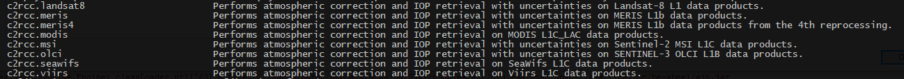
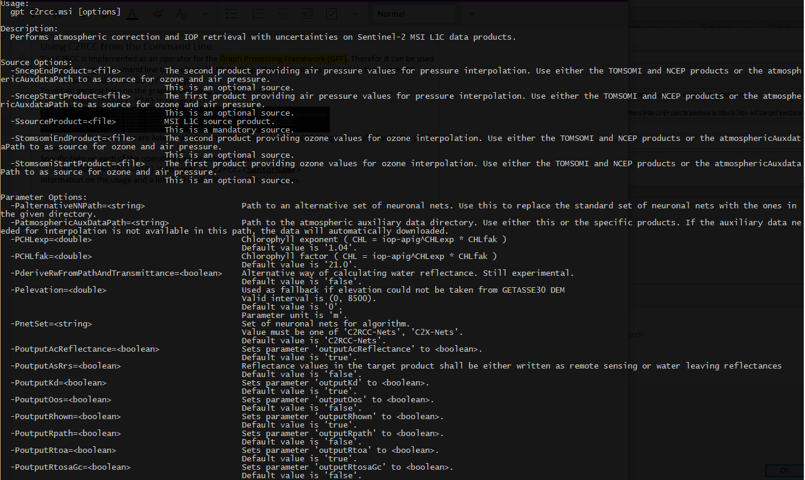

| C2RCC Processor Description |
|
The user interface of all C2RCC processors consist of the menu and the lower button
group, they are common to all sensor specific procesors. The I/O Parameters are common for all
processors too.
The Processing Parameters are sensor specific and are described on the following pages:
Beside the graphical user interface, C2RCC processors can also be used from the command line.
When this entry is selected, an 'Open File' dialog will appear. Here, a GPF parameters XML file can be selected, containing processing parameters for this processor which were saved earlier. These parameters will be loaded and applied for the upcoming processing.
Save Parameters...:When this entry is selected, a 'Save File' dialog will appear. Here, the current set of processing parameters can be saved into a GPF parameters XML file for later use.
Display Parameters...:When this entry is selected, the current set of processing parameters will be displayed in XML format. Can be used to copy the parameters into an existing GPF graph XML file.
When this entry is selected, this online help for this processor is opened in a separate window.
About...:When this entry is selected, an 'About' dialog for the current processor is opened.
When this button is clicked, the processing will be started with the selected parameters.
Close:When this button is clicked, the processor tool window will be closed.
The C2RCC is implemented as an operator for the Graph Processing Framework (GPF). Therefore it can be used also with the 'gpt' command line tool outside SNAP Desktop. The processing is invoked by the command
${SNAP-INSTALL-DIR}/bin/gpt
To obtain general help on the graph processing, use the command
${SNAP-INSTALL-DIR}/bin/gpt -h
All names of the operators are listed, including the C2RCC operators. All C2RCC operators start with the prefix 'c2rcc.'
Specific help on each of the operators can be obtained with
${SNAP-INSTALL-DIR}/bin/gpt -h c2rcc.<sensor_name>
Information on the usage and a list of all available parameters are given.
This will also print a XML template which you can you use to build a graph XML file. This is useful when you want to perform multiple steps in one go or if you want to persist the parameters and don't want to specify them every time on the command line.
Such a graph file can the be called as follows:
${SNAP-INSTALL-DIR}/bin/gpt graphFile.xml <sourceFilePath>